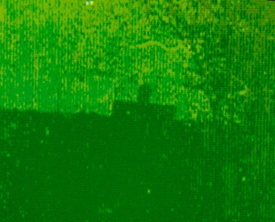

Puisque l'objet photographié à Ramillies survolait le territoire, en pleine nuit, on peut admettre qu'il observait
ce qu'il y avait au sol au moyen d'un système de vision nocturne à lumière infrarouge. Le principe est simple et bien
connu. La lumière infrarouge passe à travers le verre. On peut donc la capter au moyen de lentilles pour former une
image sur une photocathode. Celle-ci se trouve sur la face interne d'un tube en verre, où l'on a fait le vide. Les
électrons émis à un endroit donné de la photocathode sont accélérés et déviés par des électrodes, pour qu'ils tombent
à un endroit donné d'un écran lumineux. L'image initiale en lumière infrarouge est donc transformée en une image
identique en lumière visible. Elle est observée au moyen d'un oculaire. Il s'agit donc d'un "convertisseur
d'image".
Je possède moi-même des jumelles à vision nocturne (BN. 2,5 x 42, d'origine soviétique). Cela n'a rien de
sorcier, mais le colonel Corso voudrait nous faire croire P.J. Corso and W.J. Burnes: "The day after Roswell", Pocket Book, 1997.
que le laser, le transistor et les appareils de vision nocturne auraient été développés à partir des renseignements
tirés de l'épave d'un ovni, récupéré à Roswell. Ce n'est pas crédible pour un physicien, parce qu'on connaît bien les
étapes de ces développements, mais la tactique de base des Services secrets est d'induire en erreur, en mélangeant des
informations diverses. En 1998, j'ai vu le colonel Corso au Congrès ufologique de San Marino. Certains le fêtaient
comme une vedette, à cause de ses "révélations". D'autres s'en méfiaient. Pour ma part, je l'observais avec un certain
amusement : il continuait à mener une double vie d'espion.
Cela mérite quelques précisions. Philip Corso est entré en fonction à la fin de la Seconde Guerre Mondiale, comme
capitaine des services de renseignement. Il était à Rome de 1944 à 1947. Ensuite, il a suivi les cours de la Military
Intelligence School, aux Etats-Unis. Le 6 juillet 1947, il était stationné à Fort Riley, où il aurait eu l'occasion
d'assister au transit de matériel venant de Roswell pour être examiné par le " Air Material Command " à Wright Field,
Ohio. Au cours de la nuit, il aurait même vu le corps d'un des êtres décédés. Il en dit qu'il n'était pas de cette
planète. Admettons. Ce n'est pas impossible, mais cela ne nous apprend rien d'important. Au début des années 50,
Corso a travaillé en Corée, sous le général MacArthur, de nouveau comme officier du renseignement. Ensuite, il a servi
au Conseil de sécurité nationale, à Washington. Il fut même officier de liaison du président Eisenhower, avec le grade
de lieutenant colonel.
En 1961, il a travaillé au Pentagone sous les ordres du général Trudeau, pour la recherche et le développement de
nouvelles armes. Il quitta l'armée en 1963 et il a travaillé ensuite dans le staff des sénateurs Eastland et Thurmond,
en tant que spécialiste des questions de Sécurité nationale. Tout cela signifie qu'il a été très marqué par
son appartenance aux Services secrets. Au Pentagone, il a pu avoir accès à des rapports sur Roswell, mais qu'il ait
été chargé d'en tirer les renseignements pour que certaines industries américaines arrivent à développer les
technologies qu'il cite est de la fiction qui a d'autres buts. Corso n'hésite pas à affirmer que la motivation réelle
de la course aux armements était de pouvoir faire face aux extraterrestres. Il plaide même pour que l'on
continue à préparer la "guerre des étoiles" pour cette raison. Malgré tout, Corso a dû se renseigner sur Roswell et
quelques informations pourraient donc être correctes.
Il affirme que Steve Arnold, un homme du contre-espionnage de la Base de l'USAF à Roswell, comme Jesse Marcel, se
serait rendu avec celui-ci sur le lieu du crash. Il faisait encore nuit, mais en regardant à l'intérieur de l'épave,
il aurait constaté que la face supérieure était lumineuse comme si le soleil était déjà levé (p. 14). Corso
explique qu'il devait y avoir un appareil qui pénétrait notre nuit (en émettant de l'infrarouge) ou utilisait les
différences de température de différents objets pour créer une image visuelle, permettant aux occupants de naviguer
et d'observer dans l'obscurité (p. 102). Il les aidait à transformer la nuit en jour (p. 111).
Corso insiste: parmi les artefacts de Roswell, il y aurait eu des intensificateurs de lumière (p. 125, 127,
128, 141, 143), comme les "viseurs à infrarouge" des Nazis pendant la Seconde Guerre Mondiale (p. 130). Les
intensificateurs de lumière véritables requièrent deux ou trois étages de conversion, pour se servir uniquement de la
lumière résiduelle, sans phares à lumière infrarouge. Les chars en utilisent, pour ne pas être détectés trop
facilement par des petits convertisseurs d'image et devenir ainsi la cible d'armes antichars. Quelle que soit la
confiance qu'on peut attribuer à Corso quant aux systèmes de vision nocturne utilisés par des ovnis en 1947, il est
logique qu'ils en soient dotés. Le décodage de la photo de Ramillies nous fournit par contre une preuve assez directe
de l'utilisation de systèmes de vision nocturne par des ovnis et même du renforcement de leurs efficacité par une émission
de lumière infrarouge très intense.
En 1990, le professeur Acheroy de l'Ecole Royale Militaire a parlé de mon explication de la photo de Ramillies à un
officier français. Celui-ci reconnut de suite que cela expliquerait aussi une anomalie qu'il avait constatée lui-même.
Quand il s'était rendu au "rideau de fer", il avait pris 2 dias d'un mirador, mais après le développement, toutes les
photos du film étaient réussies, sauf celles-là. J'ai obtenu une copie de chacune de ces deux dias. Il suffit de
reproduire la partie supérieure de l'une d'elles (figure 4), pour se rendre compte de sa mauvaise qualité.
Figure 4 : Extrait d'une dia altérée par l'effet Herschel

Un mince faisceau de lumière blanche était dispersé par un prisme, afin d'étaler ses composantes
spectrales sur un film. Celui-ci était contenu dans un appareil photographique, dont l'objectif avait été enlevé.
Puisque cela préserve le mécanisme d'obturation, nous pouvions prendre des photos avec des temps d'exposition
différents, entre 2 et 1/1000 s. De la lumière infrarouge était fournie par une source relativement intense (lampe
Philips de 150 W, avec un réflecteur interne), pourvue de 2 filtres (Edmund, USA) pour arrêter toute lumière
visible. Je superposais de la lumière infrarouge sur la partie inférieure de la photo, la partie supérieure étant
protégée. Ces expériences ont été réalisées avec 2 types de films : Kodachrome, dia 25 ASA et Fujicolor, nég. 1600
ASA. La partie inférieure est complètement brouillée, mais le mirador est encore discernable en contre-jour. C'est
la couleur verte qui prédomine partout. Il importe de savoir, qu'avant la chute du mur de Berlin, il y avait une
bande interdite, traversant les campagnes du nord au sud et que la "police du peuple" gardait les miradors, en étant
chargée de tirer sur toute personne qui tenterait de traverser la zone interdite. Elle était délimitée par des
barbelés et dégagée de toute végétation. Ces "policiers du peuple" (Volkspolizei ou Vopo) disposaient de jumelles
pour la vision nocturne et de projecteurs de lumière infrarouge. Ceux-ci permettaient de scruter des endroits
suspects à grande distance et de repérer des fuyards, sans qu'ils ne s'en doutent. Il est probable que les vopos
savaient aussi qu'ils pouvaient perturber la prise de photos, même pendant la journée, en braquant leur projecteur à
infrarouge sur la camera.
Revenons à l'objet volant non identifié de Ramillies. Au cours de la vague belge, il y eut d'autres triangles à
coins arrondis (VOB.1. fig. 1.13, 2.18, 2.27, 2.45, 2.48, 2.62. VOB.2, fig 1.32, 1.39, 1.42, 4.1, 4.12, 4.13 et le
cahier des illustrations de chacun des 2 rapports). Il y a même un bel exemple d'un triangle à côtés courbés
(VOB.1. peinture 7.17c). Mais si les ovnis pouvaient utiliser de l'infrarouge, il serait étonnant qu'on ne l'ait
jamais remarqué. En fait, il existe au moins une preuve photographique directe.
Ce cas a été cité par Bruce Macabee [20]. Le soir du 12 mars 1991, on a pris 5 photos avec un film à infrarouge
(noir et blanc, mais sensible jusqu'à 900 nm). Les trois premières photos ne montraient qu'une petite tache, bien
que l'OVNI apparaissait visuellement comme une tache rouge très brillante. Les deux photos suivantes, prises quand
l'OVNI était devenu blanc et moins brillant, montraient des taches 7 fois plus larges. Cet OVNI émettait donc plus
de lumière IR quand l'oeil percevait moins de lumière visible. Bruce Macabee note que cela ne pouvait pas résulter
d'une température plus élevée.
L'histoire de cette "photographie apparemment ratée" de Ramillies est instructive, parce qu'elle devrait nous
rendre prudents. Nous avons encore trop tendance à ne pas nous rendre compte des réalités cachées, auxquelles on
accède seulement d'une manière indirecte. C'est le problème fondamental de l'ufologie. Nous ne pouvons pas aller
voir à l'intérieur des ovnis et nous ne savons pas d'où ils viennent. Faut-il en conclure qu'ils n'existent pas ou
que tout cela se résume à un "faux problème" qu'on ne peut pas résoudre ? N'oublions pas qu'on est parvenu à
savoir que les atomes et les particules élémentaires existent et même à en déterminer les propriétés, bien qu'on
ne puisse ni les voir, ni les toucher.